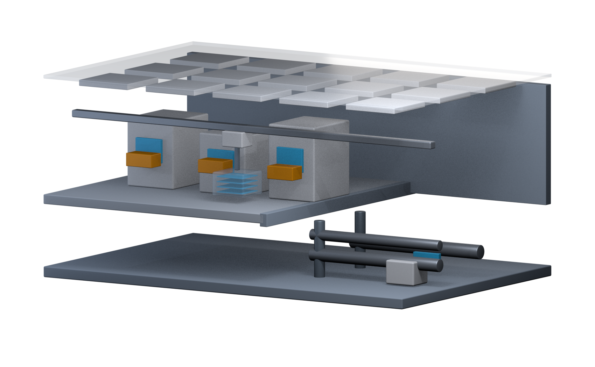

Part 0 · 开始之前
晶圆厂如何运行：洁净室、自动搬运、设备与人
晶圆厂不是一间大厂房，而是一台「会呼吸的机器」：上面送干净的空气，中间跑晶圆，下面全是管线和泵。这一章把厂房拆开看，再看晶圆是怎么在裏面移动的。
三层剖面对话
洁净度可切换
📍 前一站 看完整趟旅程的地图→本章 认识晶圆厂这个「场地」，以及它如何日夜运转→下一站 认识我们要制造的东西：晶体管
01三层：上面送风，中间干活，下面支撑
从外面看是一栋方形建筑，里面其实分三层。点任意一层看它负责什么。
中层 · 洁净室：设备和晶圆都在这一层。空气从天花板下来、穿过有孔地板被抽走，微粒被一路往下带；晶圆装在 FOUP 里，靠天花板上的天车（OHT）在设备之间移动。
02洁净室到底有多干净
一颗比细菌还小的微粒落在晶圆上，就可能让整颗裸片报废。切三种环境，看有多少东西会落到晶圆上。
0落在晶圆上的微粒（示意计数）
Class 1000：每立方英尺 ≥0.5 µm 的微粒不超过 1000 颗。这是老标准，现场仍常这样叫。
关键观念是「迷你环境」：不需要整间厂房都最干净，只要晶圆经过的地方干净——晶圆几乎一直待在密封的 FOUP 里，只在设备内部才打开。
03人也是污染源
皮屑、头发、汗水、化妆品都会带来微粒，所以进洁净室要全身包覆，再过风淋室吹一遍。这也是为什么厂里能自动化的都尽量自动化。
FOUP
前开式晶圆传送盒，一盒最多 25 片，满载约 8 公斤。晶圆在里面几乎不接触外界空气。
OHT / Stocker / Load Port
天车在天花板轨道跑，Stocker 暂存，Load Port 是设备门口的平台。三者构成厂内的「物流网」。
043D 剖面：切开一栋厂房
把厂房从中间切开：上面是半透明的天花板，挂着一格一格的送风口；中间是设备和天车；地板下面是回风空间与管线。三层的相对位置，平面图画不出来。

可以转着看：打开 3D 交互版——转到侧面，看天车轨道和地板的关系。
＋谁在晶圆厂里工作
晶圆厂 24 小时全年无休，技术员与部分工程师要轮班。常见职务大致是这样分工的：
| 职务 | 主要工作 |
|---|---|
| 工艺工程师 PE | 负责某一类工艺的 Recipe 与质量，处理工艺异常 |
| 设备工程师 EE | 负责设备的保养、维修与稳定运行 |
| 工艺集成工程师 PIE | 从整条流程看产品，协调各工艺，确保电性与良率达标 |
| 良率工程师 YE | 分析良率与缺陷数据，找出良率损失的原因 |
| 制造部 MFG | 安排生产、操作与监控设备，让晶圆准时产出 |
| 厂务工程师 | 维持水、电、气体、化学品与洁净室环境稳定 |
| 质量保证 QA | 质量系统、可靠性验证与客户质量问题 |
| CIM 工程师 | 开发与维护工厂的自动化与信息系统 |
＋原文里的名词与现场经验
以下内容逐条取自原书，保留「定义 / 现场用法 / 常见混淆」与「情境 / 做法 / 为什么」的原始结构。
名词洁净室（Cleanroom）
- 定义
- 严格控制微粒、温度、湿度与气流的生产空间，正式名称是洁净室。
- 现场用法
- 「进洁净室前记得换无尘衣」「这区是 Class 1」。
- 相关名词
- 无尘衣、风淋室、迷你环境
- 常见混淆
- 洁净室不是完全没有灰尘，而是依每单位体积的微粒数量分级。现场仍常用旧标准的「Class 1」「Class 10」来称呼等级，数字越小越干净。
名词FOUP（Front Opening Unified Pod，前开式晶圆传送盒）
- 定义
- 300 mm 晶圆厂用来装载、保护与搬运晶圆的密封盒，最多装 25 片。
- 现场用法
- 「那个 FOUP 还在 Stocker 里，要先叫下来。」
- 相关名词
- Lot、OHT、Stocker、Load Port
- 常见混淆
- FOUP 是「盒子」，Lot 是「一批晶圆」。通常一个 Lot 装在一个 FOUP 里，但两者不是同一件事，晶圆也可能换盒。
Know-how保养完的设备不能马上跑产品
- 情境
- 设备完成保养，零件换新、腔体清洁过。
- 做法
- 先跑测试用的晶圆，检查微粒、膜厚、刻蚀速率等是否正常，确认合格后才开放生产。这个确认过程现场常叫「Qual」。
- 为什么
- 保养会改变设备内部的状态，新零件和刚清洁过的腔体不一定马上稳定。
- 没做会怎样
- 如果设备其实有问题，第一批跑进去的产品晶圆可能整批报废。
- 相关章节
- 第 6 章 刻蚀、第 15 章 测量与检测
Know-how急件越多，工厂越慢
- 情境
- 有些晶圆被设定为急件（Hot Lot），在每一站都可以优先使用设备。
- 做法
- 工厂会严格限制急件的数量。
- 为什么
- 每一批急件插队，其他晶圆就得多等一下；批式设备还可能为了急件不等凑满就开机，降低效率。
- 没做会怎样
- 如果每批都是急件，就等于没有急件，整座工厂的生产周期反而变长。
- 相关章节
- 第 23 章 工厂如何被系统管理
＋延伸阅读
- Peter Van Zant，《Microchip Fabrication》，污染控制相关章节
- Wallace J. Hopp、Mark L. Spearman，《Factory Physics》，生产周期与在制品的观念
本章重点
- 晶圆厂分三层：上层送风过滤、中层洁净室、下层厂务管线。
- 洁净室按单位体积微粒数分级，越小越干净；但关键是「晶圆经过的地方」干净。
- 晶圆装在 FOUP 里，靠天车（OHT）在设备之间移动。
- 人是最大的污染源，无尘衣与风淋室是标准动作。
- 设备要定期保养（PM），保养后先跑控片确认（Qual）才放行产品。